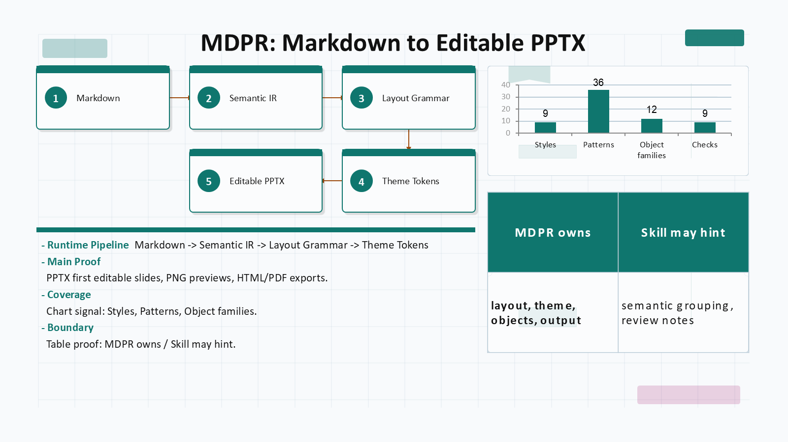

Markdown to editable PPTX
PowerPoint decks from Markdown, without losing editability.
MDPR is a deterministic presentation runtime that turns Markdown into visually checked, editable PPTX decks with layout validation, theme grammar, and optional LLM-advised review.
npm install -g @mdpresent/cli then mdpresent build deck.md --to pptx,html --out dist.
Best for engineering reports, research notes, product updates, and Markdown workflows that need real PowerPoint editing after generation.

Text boxes, tables, charts, diagrams, proof objects, and icon slots are rendered as PowerPoint surfaces where possible.
No API key or model call is required for normal builds. Markdown is planned through Presentation IR and Layout IR.
Overflow, object bounds, marker alignment, graph preservation, theme drift, and generated artifacts are checked.
mdpr-skill can suggest semantic hints and critique notes, while MDPR owns final layout, colors, z-order, and output.
How MDPR differs
| Compared with | MDPR focus |
|---|---|
| Pandoc | PPTX-first layout planning, editability, overflow validation, object preservation, and preview QA. |
| Marp / Slidev | PowerPoint editing workflows instead of primarily web slide rendering. |
| LLM slide generators | Deterministic ownership of parsing, splitting, coordinates, theme colors, z-order, and renderer output. |